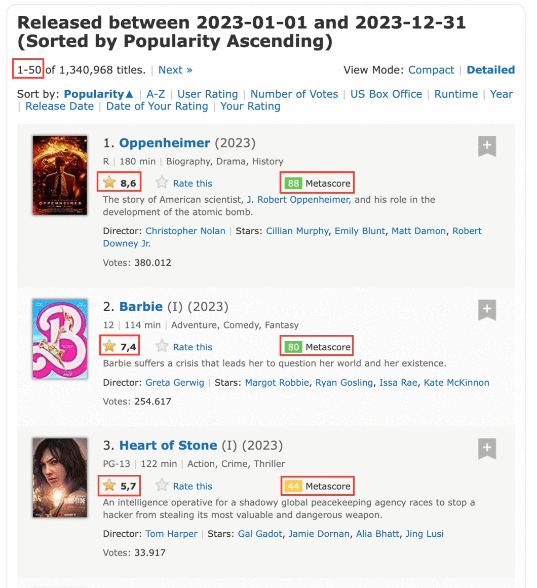
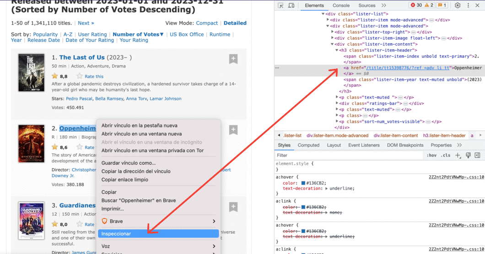
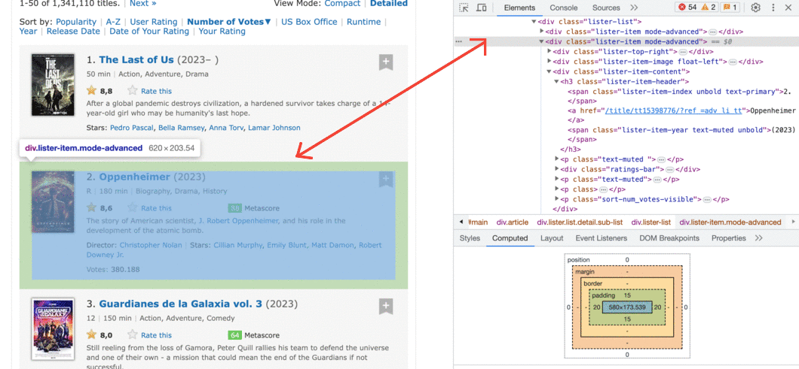
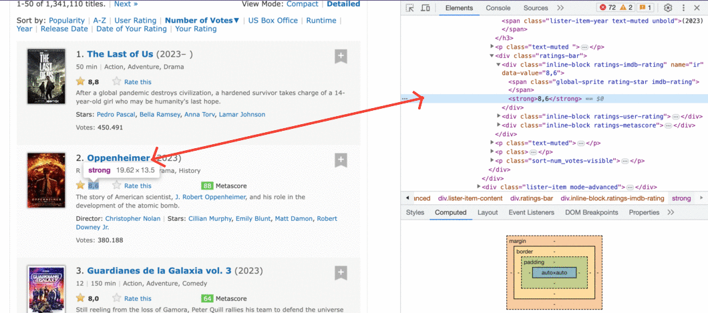
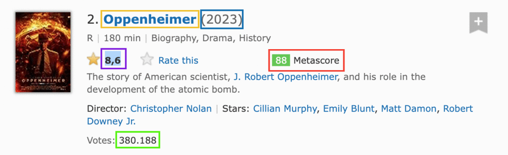
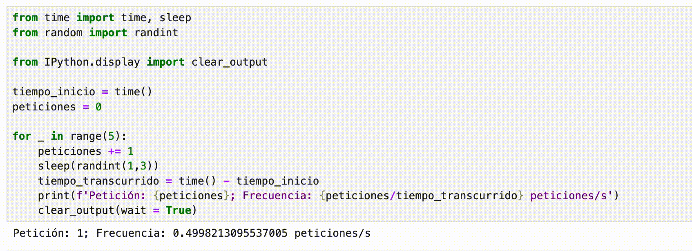
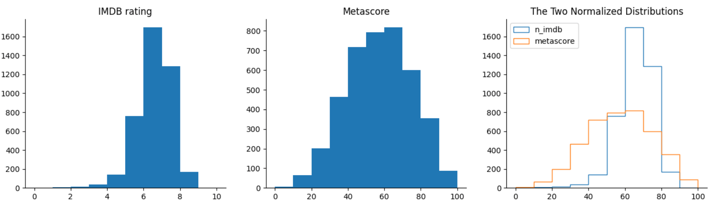

Siempre tuve en mis favoritos del navegador el tutorial de dataquest sobre web scraping con beautifulsoup por Alex Olteanu, pero desde hace un tiempo para acá, bajaron dicho artículo de su página web. El propósito de este artículo es rescatar ese contenido y, de paso, traducirlo al español 💪.
¡Empecemos!
Actualización:
Esta charla que hice en Python Chile complementa muy bien este artículo. Te recomiendo verla desde el minuto 37:34.
Para obtener datos para proyectos de ciencia de datos, a menudo confiará en bases de datos SQL y NoSQL, API o conjuntos de datos en formato CSV listos para usar.
El problema es que no siempre puede encontrar un conjunto de datos sobre un tema específico, las bases de datos no se mantienen actualizadas y las API son costosas o tienen límites de uso.
Sin embargo, si los datos que está buscando están en una página web, entonces la solución a todos estos problemas es el web scraping.
En este tutorial, aprenderemos a raspar varias páginas web con Python usando BeautifulSoup y requests. Luego realizaremos un análisis simple usando pandas y matplotlib.
Para seguir este artículo necesitas tener:
- Una comprensión básica de HTML.
- Una buena comprensión de los conceptos básicos de Python.
- Una idea aproximada de qué es el web scraping.
Scraping de datos para más de 2000 películas
Queremos analizar las distribuciones de las clasificaciones de películas de IMDB y Metacritic para ver si encontramos algo interesante. Para hacer esto, primero recopilaremos datos de más de 2000 películas.
Es fundamental identificar el objetivo de nuestro scraping desde el principio.
Escribir un script de scraping puede llevar mucho tiempo, especialmente si queremos scrapear más de una página web. Queremos evitar pasar horas escribiendo un script que extrae datos que en realidad no necesitaremos.
Determinando qué páginas vamos a scrapear
Una vez que hemos establecido nuestro objetivo, debemos identificar un conjunto eficiente de páginas para scrapear.
Queremos encontrar una combinación de páginas que requiera un número relativamente pequeño de solicitudes. Una solicitud (request en inglés) es lo que sucede cada vez que accedemos a una página web. Nosotros 'solicitamos' el contenido de una página del servidor. Cuantas más solicitudes hagamos, más tiempo necesitará ejecutarse nuestro script y mayor será la sobrecarga en el servidor.
Una forma de obtener todos los datos que necesitamos es compilar una lista de nombres de películas y usarla para acceder a la página web de cada película en los sitios web de IMDB y Metacritic.

Como queremos obtener más de 2000 calificaciones tanto de IMDB como de Metacritic, tendremos que realizar al menos 4000 solicitudes. Si hacemos una solicitud por segundo, nuestro script necesitará un poco más de una hora para realizar 4000 solicitudes. Por ello, merece la pena intentar identificar formas más eficientes de obtener nuestros datos.
Si exploramos el sitio web de IMDB, podemos descubrir una forma de reducir a la mitad el número de solicitudes. Las puntuaciones de Metacritic se muestran en la página de películas de IMDB, por lo que podemos eliminar ambas clasificaciones con una sola solicitud:
Si investigamos más a fondo el sitio de IMDB, podemos descubrir la página que se muestra a continuación. Contiene todos los datos que necesitamos para cierto número de películas (Por defecto 50, pero podemos escoger 250). Dado nuestro objetivo, esto significa que solo tendremos que hacer un número limitado de solicitudes (alrededor de 46), lo que es 100 veces menos que nuestra primera opción. Exploremos más esta última opción.

Identificando la estructura de la URL
Nuestro desafío ahora es asegurarnos de que entendemos la lógica de la URL a medida que cambian las páginas que queremos scrapear. Si no podemos entender esta lógica lo suficiente como para poder implementarla en el código, llegaremos a un callejón sin salida.
Si accede a la página de búsqueda avanzada de IMDB, y selecciona advance title search puede buscar películas por año:
En el campo "Release Date", busquemos por fechas de 2022-01-01 a 2022-12-31. Luego, al final de la página le damos click al botón de buscar. En la siguiente página ordenamos las películas por número de votos y le damos click al botón de siguiente, al final de la página final. Así llegaremos a esta página web, que tiene esta URL:
En la imagen de arriba, puedes ver que la URL tiene varios parámetros después del signo de interrogación:
release_date: muestra solo las películas estrenadas en un año específico.sort: Ordena las películas en la página. `sort=num_votes,desc se traduce en ordenar por número de votos en orden descendente.start: especifica el número de inicio de las páginas a listar.ref_: Nos lleva a la página siguiente o anterior. La referencia es la página en la que nos encontramos actualmente.adv_nxtyadv_prvson dos valores posibles. Se traducen para avanzar a la página siguiente y avanzar a la página anterior, respectivamente.
Si navega por esas páginas y observa la URL, notará que solo cambian los valores de los parámetros. Esto significa que podemos escribir un script para que coincida con la lógica de los cambios y hacer muchas menos solicitudes para escrapear nuestros datos.
Comencemos a escribir el script solicitando el contenido de esta única página web:
url = "https://www.imdb.com/search/title/?release_date=2023&count=250"
En el primer bloque de código vamos a:
- Instalar
requests
pip install requests
- Importar la función
get()desde el módulo derequests. - Asignar la dirección de la página web a una variable llamada
url. - Solicitar al servidor el contenido de la página web utilizando
get()y almacenar la respuesta del servidor en la variablerespuesta. - Imprima una pequeña parte del contenido de la
respuestaaccediendo a su atributo.text(respuestaahora es un objetoResponse).
from requests import get url = 'https://www.imdb.com/search/title/?release_date=2023&count=250' respuesta = get(url) if respuesta.status_code == 200: print(respuesta.text[:500])
La respuesta que se obtiene:
<!DOCTYPE html> <html xmlns:og="http://ogp.me/ns#" xmlns:fb="http://www.facebook.com/2008/fbml"> <head> <meta charset="utf-8"> <script type="text/javascript">var IMDbTimer={starttime: new Date().getTime(),pt:'java'};</script> <script> if (typeof uet == 'function') { uet("bb", "LoadTitle", {wb: 1}); } </script> <script>(function(t){ (t.events = t.events || {})["csm_head_pre_title"] = new Date().getTime(); })(IMDbTimer);</script>
Comprendiendo la estructura HTML de una sola página
Como puede ver en la primera línea de respuesta.text, el servidor nos envió un documento HTML. Este documento describe la estructura general de esa página web, junto con su contenido específico (que es lo que hace que esa página en particular sea única).
Todas las páginas que queremos escrapear tienen la misma estructura general. Esto implica que también tienen la misma estructura general de HTML. Entonces, para escribir nuestro script, bastará con comprender la estructura HTML de una sola página. Para hacer eso, usaremos las herramientas de desarrollo del navegador (Developer Tools en inglés).
Si usa Chrome o Brave, haga clic con el botón derecho en un elemento de la página web que le interese y luego haga clic en Inspeccionar. Esto lo llevará directamente a la línea HTML que corresponde a ese elemento:

También puede hacer esto con Firefox o Safari DevTools.
Tenga en cuenta que toda la información de cada película, incluido el póster, está contenida en una etiqueta div.

Hay muchas líneas HTML anidadas dentro de cada etiqueta div. Puede explorarlos haciendo clic en esas pequeñas flechas grises a la izquierda de las líneas HTML correspondientes a cada div. Dentro de estas etiquetas anidadas encontraremos la información que necesitamos, como la calificación de una película.

Se muestran 50 películas por página, por lo que debe haber un contenedor div para cada una. Extraigamos todos estos 50 contenedores mediante el análisis gramatical (parsing en inglés)del documento HTML de nuestra solicitud anterior.
Usando BeautifulSoup para analizar el contenido HTML
Para analizar nuestro documento HTML y extraer los contenedores de 50 `div, usaremos un módulo de Python llamado BeautifulSoup, el módulo de web scraping más común para Python.
En el siguiente bloque de código vamos a:
- Instalar
BeautifulSoup. - Importar el creador de la clase
BeautifulSoupdel paquetebs4. - Parsear
respuesta.textal crear un objetoBeautifulSoupy asignar este objeto asopa_html. El argumento'html.parser'indica que queremos realizar el análisis utilizando el analizador HTML integrado de Python.
pip install beautifulsoup4
from bs4 import BeautifulSoup sopa_html = BeautifulSoup(respuesta.text, 'html.parser') type(sopa_html)
Esto imprime que nuestra sopa es un objeto de tipo:
<class 'bs4.BeautifulSoup'>
Antes de extraer los 50 contenedores div, debemos averiguar qué los distingue de otros elementos div en esa página. A menudo, la marca distintiva reside en el atributo de class. Si inspecciona las líneas HTML de los contenedores de interés, notará que el atributo de class tiene dos valores:
lister-itemmode-advanced.
Esta combinación es exclusiva de estos contenedores div. Podemos ver que es cierto haciendo una búsqueda rápida con (Ctrl + F). Tenemos 50 contenedores de este tipo, por lo que esperamos ver solo 50 coincidencias:

Ahora usemos el método find_all() para extraer todos los contenedores div que tienen un atributo de clase de tipo lister-item mode-advanced:
contenedores_pelicula = sopa_html.find_all('div', class_ = 'lister-item mode-advanced') print('Contenedores de la película:', type(contenedores_pelicula)) print('Longitud:', len(contenedores_pelicula))
Lo cual imprime
Contenedores de la película: <class 'bs4.element.ResultSet'> Longitud: 250
find_all devolvió un objeto tipo ResultSet que contiene una lista de los 250 divs que nos interesan.
Ahora solo seleccionaremos el primer contenedor y, por turno, extraeremos cada elemento que nos interesa:
- El nombre de la pelicula
- El año del estreno de la película
- La calificación de IMDB
- El Metascore
- El número de votos

Extraer los datos de una sola película
Podemos acceder al primer contenedor, que contiene información sobre una sola película, usando la notación de lista en contenedores_pelicula.
primera_pelicula = contenedores_pelicula[0] print(primera_pelicula)
<div class="lister-item mode-advanced"> <div class="lister-top-right"> <div class="ribbonize" data-caller="filmosearch" data-tconst="tt15398776"></div> </div> <div class="lister-item-image float-left"> <a href="/title/tt15398776/"> <img alt="Oppenheimer" class="loadlate" data-tconst="tt15398776" height="98" loadlate="https://m.media-amazon.com/images/M/MV5BMDBmYTZjNjUtN2M1MS00MTQ2LTk2ODgtNzc2M2QyZGE5NTVjXkEyXkFqcGdeQXVyNzAwMjU2MTY@._V1_UX67_CR0,0,67,98_AL_.jpg" src="https://m.media-amazon.com/images/S/sash/4FyxwxECzL-U1J8.png" width="67"/> </a> </div> <div class="lister-item-content"> <h3 class="lister-item-header"> <span class="lister-item-index unbold text-primary">1.</span> <a href="/title/tt15398776/">Oppenheimer</a> <span class="lister-item-year text-muted unbold">(2023)</span> </h3> <p class="text-muted"> <span class="certificate">R</span> <span class="ghost">|</span> <span class="runtime">180 min</span> <span class="ghost">|</span> <span class="genre"> Biography, Drama, History </span> </p> <div class="ratings-bar"> <div class="inline-block ratings-imdb-rating" data-value="8.6" name="ir"> <span class="global-sprite rating-star imdb-rating"></span> <strong>8.6</strong> </div> <div class="inline-block ratings-user-rating"> <span class="userRatingValue" data-tconst="tt15398776" id="urv_tt15398776"> <span class="global-sprite rating-star no-rating"></span> <span class="rate" data-no-rating="Rate this" data-value="0" name="ur">Rate this</span> </span> <div class="starBarWidget" id="sb_tt15398776"> <div class="rating rating-list" data-csrf-token="" data-ga-identifier="" data-starbar-class="rating-list" data-user="" id="tt15398776|imdb|8.6|8.6|adv_li_tt||advsearch|title" itemprop="aggregateRating" itemscope="" itemtype="http://schema.org/AggregateRating" title="Users rated this 8.6/10 (380,436 votes) - click stars to rate"> <meta content="8.6" itemprop="ratingValue"/> <meta content="10" itemprop="bestRating"/> <meta content="380436" itemprop="ratingCount"/> <span class="rating-bg"> </span> <span class="rating-imdb" style="width: 120.4px"> </span> <span class="rating-stars"> <a href="/register/login?why=vote" rel="nofollow" title="Register or login to rate this title"><span>1</span></a> <a href="/register/login?why=vote" rel="nofollow" title="Register or login to rate this title"><span>2</span></a> <a href="/register/login?why=vote" rel="nofollow" title="Register or login to rate this title"><span>3</span></a> <a href="/register/login?why=vote" rel="nofollow" title="Register or login to rate this title"><span>4</span></a> <a href="/register/login?why=vote" rel="nofollow" title="Register or login to rate this title"><span>5</span></a> <a href="/register/login?why=vote" rel="nofollow" title="Register or login to rate this title"><span>6</span></a> <a href="/register/login?why=vote" rel="nofollow" title="Register or login to rate this title"><span>7</span></a> <a href="/register/login?why=vote" rel="nofollow" title="Register or login to rate this title"><span>8</span></a> <a href="/register/login?why=vote" rel="nofollow" title="Register or login to rate this title"><span>9</span></a> <a href="/register/login?why=vote" rel="nofollow" title="Register or login to rate this title"><span>10</span></a> </span> <span class="rating-rating"><span class="value">8.6</span><span class="grey">/</span><span class="grey">10</span></span> <span class="rating-cancel"><a href="/title/tt15398776/vote" rel="nofollow" title="Delete"><span>X</span></a></span> </div> </div> </div> <div class="inline-block ratings-metascore"> <span class="metascore favorable">88 </span> Metascore </div> </div> <p class="text-muted"> The story of American scientist, <a href="/name/nm0649185">J. Robert Oppenheimer</a>, and his role in the development of the atomic bomb.</p> <p class=""> Director: <a href="/name/nm0634240/">Christopher Nolan</a> <span class="ghost">|</span> Stars: <a href="/name/nm0614165/">Cillian Murphy</a>, <a href="/name/nm1289434/">Emily Blunt</a>, <a href="/name/nm0000354/">Matt Damon</a>, <a href="/name/nm0000375/">Robert Downey Jr.</a> </p> <p class="sort-num_votes-visible"> <span class="text-muted">Votes:</span> <span data-value="380436" name="nv">380,436</span> </p> </div> </div>
Esto nos regresa un HTML bastante largo, por lo que para hayar cada elemento, necesitaremos usar el inspector de elementos del navegador.
El nombre de la pelicula
Comenzamos con el nombre de la película y localizamos su línea HTML correspondiente usando el inspector de elementos. Puede ver que el nombre está contenido dentro de una etiqueta de anclaje (<a>). Esta etiqueta está anidada dentro de una etiqueta de encabezado (<h3>). La etiqueta <h3> está anidada dentro de una etiqueta <div>. Este <div> es el tercero de los divs anidados en el contenedor de la primera película. Nosotros ya almacenamos el contenido de este contenedor en la variable primera_pelicula.

primera_pelicula es un objeto Tag y las diversas etiquetas HTML que contiene se almacenan como sus atributos. Podemos acceder a ellos tal como accederíamos a cualquier atributo de un objeto Python. Sin embargo, usar un nombre de etiqueta como atributo solo seleccionará la primera etiqueta con ese nombre. Si ejecutamos primera_pelicula.div, solo obtenemos el contenido de la primera etiqueta div:
print(primera_pelicula.div)
<div class="lister-top-right"> <div class="ribbonize" data-caller="filmosearch" data-tconst="tt15398776"></div> </div>
Accediendo a la primera etiqueta de anclaje (<a>) no nos lleva al nombre de la película. El primer <a> está en algún lugar dentro del segundo div:
print(primera_pelicula.a)
<a href="/title/tt15398776/"> <img alt="Oppenheimer" class="loadlate" data-tconst="tt15398776" height="98" loadlate="https://m.media-amazon.com/images/M/MV5BMDBmYTZjNjUtN2M1MS00MTQ2LTk2ODgtNzc2M2QyZGE5NTVjXkEyXkFqcGdeQXVyNzAwMjU2MTY@._V1_UX67_CR0,0,67,98_AL_.jpg" src="https://m.media-amazon.com/images/S/sash/4FyxwxECzL-U1J8.png" width="67"/> </a>
Sin embargo, accediendo a la primera etiqueta <h3> nos acerca mucho:
print(primera_pelicula.h3)
<h3 class="lister-item-header"> <span class="lister-item-index unbold text-primary">1.</span> <a href="/title/tt15398776/">Oppenheimer</a> <span class="lister-item-year text-muted unbold">(2023)</span> </h3>
Desde aquí, podemos usar la notación de atributos para acceder al primer <a> dentro de la etiqueta <h3>:
print(primera_pelicula.h3.a)
<a href="/title/tt15398776/">Oppenheimer</a>
Ahora es sólo cuestión de acceder al texto desde esa etiqueta `:
primer_nombre = primera_pelicula.h3.a.text print(primer_nombre)
Oppenheimer
El año del estreno de la película
Este dato está en una etiqueta <span> que se encuentra debajo de la etiqueta <a> que contiene el nombre.

La notación de puntos solo accederá al primer elemento span. Buscaremos por la marca distintiva del segundo <span>. Usaremos el método find() que es casi igual que find_all(), excepto que solo devuelve la primera coincidencia. De hecho, find() es equivalente a find_all(limit = 1). El argumento limit limita la salida a la primera coincidencia.
La marca distintiva consiste en los valores lister-item-year text-muted unbold asignados al atributo class. Entonces buscamos el primer <span> con estos valores dentro de la etiqueta <h3>:
primer_año = primera_pelicula.h3.find('span', class_ = 'lister-item-year text-muted unbold') print(primer_año)
<span class="lister-item-year text-muted unbold">(2023)</span>
Desde aquí, simplemente accedemos al texto usando notación de atributos:
primer_año = primer_año.text print(primer_año)
(2023)
Podríamos limpiar fácilmente esa salida y convertirla a un número entero. Pero si exploras más páginas, notarás que para algunas películas el año toma valores impredecibles como (2017)(I) o (2015)(V). Es más eficiente hacer la limpieza después del scrapeado, cuando conoceremos todos los valores del año.
La calificación de IMDB
Ahora nos centramos en extraer la calificación IMDB de la primera película.
Hay un par de formas de hacerlo, pero primero probaremos la más sencilla. Si inspecciona la calificación de IMDB usando DevTools, notará que la calificación está contenida dentro de una etiqueta <strong>.

Usemos notación de atributos y esperemos que el primer <strong> también sea el que contenga la calificación.
print(primera_pelicula.strong)
<strong>8.6</strong>
¡Excelente! Accederemos al texto, lo convertiremos al tipo float y lo asignaremos a la variable primer_imdb:
primer_imdb = float(primera_pelicula.strong.text) print(primer_imdb)
8.6
El Metascore
Si inspeccionamos el Metascore usando inspectod de elementos, notaremos que podemos encontrarlo dentro de una etiqueta span.

La notación de atributos claramente no es una solución. Hay muchas etiquetas <span> antes de eso. Puedes ver una justo encima de la etiqueta <strong>. Será mejor que utilicemos los valores distintivos del atributo class (metascore favorable).
Tenga en cuenta que si copia y pega esos valores de la pestaña del inspector de elemebtos, habrá dos caracteres de espacio en blanco entre metascore y favorable. Asegúrese de que solo haya un carácter de espacio en blanco cuando pase los valores como argumentos al parámetro class_. De lo contrario, find() no encontrará nada.
primer_mscore = primera_pelicula.find('span', class_ = 'metascore favorable') primer_mscore = int(primer_mscore.text) print(primer_mscore)
88
No todas las películas tienen puntuación. Más adelante abordaremos ese asunto.
Por ahora veamos que el valor favorable indica un Metascore alto y establece el color de fondo de la calificación en verde. Los otros dos valores posibles son unfavorable y mixed. Sin embargo, lo que es específico de todas las calificaciones de Metascore es solo el valor demetascore`. Este es el que usaremos cuando escribamos el script para toda la página.
El número de votos
El número de votos está contenido en una etiqueta <span>. Su signo distintivo es un atributo del name con el valor nv.

El atributo de name es diferente del atributo de class. Usando BeautifulSoup podemos acceder a elementos por cualquier atributo. Las funciones find() y find_all() tienen un parámetro llamado attrs. A esto podemos pasarle los atributos y valores que estamos buscando como diccionario:
primeros_votos = primera_pelicula.find('span', attrs = {'name':'nv'}) print(primeros_votos)
<span data-value="380436" name="nv">38,0436</span>
Podríamos usar la notación .text para acceder al contenido de la etiqueta <span>. Sin embargo, sería mejor si accediéramos al valor del atributo de data-value. De esta manera podemos convertir el dato extraído a un int sin tener que eliminar una coma.
Puedes tratar un objeto Tag como un diccionario. Los atributos HTML son las claves del diccionario. Los valores de los atributos HTML son los valores de las claves del diccionario. Así es como podemos acceder al valor del atributo data-value:
print(primeros_votos['data-value'])
380436
Convirtamos ese valor a un número entero y asignémoslo a primeros_votos:
primeros_votos = int(primeros_votos['data-value'])
¡Eso es todo! Ahora estamos en condiciones de escribir fácilmente un script para extraer una sola página.
El script para una sola página.
Antes de reconstruir lo que hemos hecho hasta ahora, debemos asegurarnos de extraer los datos solo de los contenedores que tienen Metascore.

Necesitamos agregar una condición para omitir películas sin Metascore.
Usando el inspector de elementos nuevamente, vemos que la sección Metascore está contenida dentro de una etiqueta <div>. El atributo class tiene dos valores:
inline-blockratings-metascore.
El distintivo es claramente el ratings-metascore.

Podemos usar find() para buscar en cada contenedor de película un div que tenga esa marca distintiva. Cuando find() no encuentra nada, devuelve un objeto None. Podemos usar este resultado en una declaración if para controlar si una película se scrapea.
Busquemos en la página web un contenedor de películas que no tenga Metascore y veamos qué devuelve find().
Importante: cuando ejecuté el siguiente código, el séptimo contenedor no tenía Metascore. Sin embargo, este es un objetivo cambiante, porque el número de votos cambia constantemente para cada película. Para obtener los mismos resultados que obtuve en la siguiente celda de código demostrativo, debe buscar un contenedor que no tenga un Metascore en el momento en que ejecuta el código.
puntaje_mscore_septimo = contenedores_pelicula[7].find('div', class_ = 'ratings-metascore') print(type(puntaje_mscore_septimo))
<class 'NoneType'>
Ahora juntemos el código anterior y comprimámoslo tanto como sea posible, pero sólo en la medida en que sea fácilmente legible. En el siguiente bloque de código:
- Declare algunas variables de
listapara tener algo en qué almacenar los datos extraídos. - Recorra cada contenedor en
contenedores_pelicula(la variable que contiene los 50 contenedores de películas). - Extraiga los datos de interés solo si el contenedor tiene un Metascore.
- Instalar el paquete de Python Pandas
pip install pandas
# Listas para guardar los datos scrapeados nombres = [] años = [] calificaciones_imdb = [] metascores = [] votos = [] # Extraer dato de un contenedor de pelicula individual for contenedor in contenedores_pelicula: # Si la película tiene Metascore, entonces extrae: if contenedor.find('div', class_ = 'ratings-metascore') is not None: # El nombre nombre = contenedor.h3.a.text nombres.append(nombre) # El año año = contenedor.h3.find('span', class_ = 'lister-item-year').text años.append(año) # La calificación IMDB imdb = float(contenedor.strong.text) calificaciones_imdb.append(imdb) # El Metascore m_score = contenedor.find('span', class_ = 'metascore').text metascores.append(int(m_score)) # El número de votos voto = contenedor.find('span', attrs = {'name':'nv'})['data-value'] votos.append(int(voto))
Revisemos los datos recopilados hasta ahora. Pandas nos facilitará ver si hemos recopilado nuestros datos correctamente.
import pandas as pd test_df = pd.DataFrame({'película': nombres, 'año': año, 'imdb': calificaciones_imdb, 'metascore': metascores, 'votos': votos }) print(test_df.info())
<class 'pandas.core.frame.DataFrame'> RangeIndex: 93 entries, 0 to 92 Data columns (total 5 columns): # Column Non-Null Count Dtype --- ------ -------------- ----- 0 película 93 non-null object 1 año 93 non-null object 2 imdb 93 non-null float64 3 metascore 93 non-null int64 4 votos 93 non-null int64 dtypes: float64(1), int64(2), object(2) memory usage: 3.8+ KB None
y ahora si reviso los primeros 5 elementos del DataFrame
print(test_df.head(n=10))
película año imdb metascore votos 0 Oppenheimer (2023) 8.6 88 380436 1 Barbie (I) (2023) 7.4 80 254911 2 Heart of Stone (I) (2023) 5.7 44 34073 3 Red, White & Royal Blue (2023) 7.1 62 26037 4 Blue Beetle (2023) 6.8 61 17039 5 Hazme el favor (2023) 6.5 59 51102 6 Guardianes de la Galaxia vol. 3 (2023) 8.0 64 294910 7 Dracula: Mar de Sangre (2023) 6.4 52 6454 8 Spider-Man: A través del spider-verso (2023) 8.8 86 237098 9 Tortugas Ninja: Caos Mutante (2023) 7.5 74 18899 10 Megalodón 2: el gran abismo (2023) 5.5 40 20273 11 Asteroid City (2023) 6.7 74 64478 12 Toc Toc Toc: El sonido del mal (2023) 5.9 50 9029 13 Misión: Imposible - Sentencia Mortal Parte 1 (2023) 8.0 81 130816 14 Gran Turismo (2023) 7.3 46 10179 15 Super Mario Bros.: La película (2023) 7.1 46 183453 16 Elementos (2023) 7.0 58 41212 17 Sonido de Libertad (2023) 7.8 43 49273 18 Strays (2023) 6.4 54 3157 19 Mansión Encantada (2023) 6.2 47 10812
¡Todo salió como se esperaba!
Como nota al margen, si ejecuta el código desde un país donde el inglés no es el idioma principal, es muy probable que obtenga algunos de los nombres de las películas traducidos al idioma principal de ese país.
Lo más probable es que esto suceda porque el servidor deduce su ubicación a partir de su dirección IP. Incluso si se encuentra en un país donde el inglés es el idioma principal, es posible que aún reciba contenido traducido. Esto puede suceder si estás usando una VPN mientras realizas las solicitudes GET.
Si lo tuyo es el inglés, pasa los siguientes valores al parámetro de headers de la función get():
headers = {"Accept-Language": "en-US, en;q=0.5"}
Esto comunicará al servidor algo como:
“Quiero el contenido lingüístico en inglés americano (en-US). Si en-US no está disponible, entonces otros tipos de inglés (en) también estarían bien (pero no tanto como en-US)”.
El parámetro q indica el grado en que preferimos un determinado idioma. Si no se especifica, el valor se establece en 1 de forma predeterminada, como en el caso de en-US. Puedes leer más sobre esto aquí.
Ahora comencemos a crear el script para todas las páginas que queremos eliminar.
El script de varias páginas.
Hacer el scraping para varias páginas es un poco más desafiante. Desarrollaremos nuestro script de una página haciendo tres cosas más:
- Haciendo todas las peticiones que queramos desde dentro del bucle.
- Controlar la velocidad del bucle para evitar bombardear el servidor con peticiones.
- Supervisar el bucle mientras se ejecuta.
Scrapearemos las primeras 2 páginas de cada año en el intervalo 2000-2022. 2 páginas para cada uno de los 23 años hacen un total de 46 páginas. Cada página tiene 250 películas, por lo que extraeremos datos de 11500 películas como máximo. Pero no todas las películas tienen un Metascore, por lo que el número será menor. Aun así, es muy probable que obtengamos datos de más de 2000 películas.
Cambiando los parámetros de las URLs
Como se mostró anteriormente, las URL siguen una cierta lógica a medida que cambian las páginas web.

Mientras vamos realizando las peticiones, solo tendremos que variar los valores de solo dos parámetros de la URL: release_date y start. Preparemos los valores que necesitaremos para bucle. En nuestro código haremos:
- Una lista llamada
paginasy la rellenaremos con los números correspondientes al inicio de cada página. - Una lista llamada
url_añosy se completará con las cadenas correspondientes a los años 2000-2022.
paginas = (1, 251) url_años = [str(i) for i in range(2000, 2023)]
Controlando la tasa de rastreo (crawl-rate)
Controlar la velocidad de rastreo es beneficioso para nosotros y para el sitio web que estamos scrapeando. Si evitamos sobrecargar el servidor con decenas de peticiones por segundo, es mucho menos probable que prohíban nuestra dirección IP. También evitamos interrumpir la actividad del sitio web que scrapeamos al permitir que el servidor también responda a las solicitudes de otros usuarios.
Controlaremos la velocidad del bucle usando la función sleep() del módulo de time de Python. sleep() pausará la ejecución del bucle durante una cantidad específica de segundos.
Para imitar el comportamiento humano, variaremos la cantidad de tiempo de espera entre solicitudes usando la función randint() del módulo random de Python. randint() genera aleatoriamente números enteros dentro de un intervalo específico.
from time import sleep from random import randint for _ in range(0, 5): print('Pin pra') sleep(randint(1,4))
Por lo pronto, solo importemos estas dos funciones en nuestro código para evitar la saturación en el siguiente bloque de código que contiene nuestro bucle principal de sueño.
Monitoreando el bucle mientras continúa
Dado que estamos scrapeando 46 páginas, sería bueno si pudiéramos encontrar una manera de monitorear el proceso de scrapeo mientras aún continúa. Esta característica es definitivamente opcional, pero puede resultar muy útil en el proceso de prueba y depuración. Además, cuanto mayor sea el número de páginas, más útil será el seguimiento. Si va a scrapear cientos o miles de páginas web en una sola ejecución de código, diría que esta característica se vuelve imprescindible.
Para nuestro script, usaremos esta función y monitorearemos los siguientes parámetros:
- La frecuencia (velocidad) de las peticiones, por lo que nos aseguramos de que nuestro programa no sobrecargue el servidor.
- La cantidad de peticiones, para que podamos detener el ciclo en caso de que se exceda la cantidad de solicitudes esperadas.
- El código de estado HTTP de nuestras solicitudes, para asegurarnos de que el servidor envíe las respuestas adecuadas.
Para obtener un valor de frecuencia, dividiremos la cantidad de solicitudes por el tiempo transcurrido desde la primera solicitud. Esto es similar a calcular la velocidad de un automóvil: dividimos la distancia por el tiempo necesario para recorrerla. Primero experimentemos con esta técnica de monitoreo a pequeña escala. Lo siguiente que haremos será:
- Establecer una hora de inicio utilizando la función
time()del módulotimey asignar el valor atiempo_inicio. - Asignar 0 a la variable
peticionesque usaremos para contar el número de solicitudes. - Iniciar un bucle y luego con cada iteración:
- Simular una solicitud.
- Incrementar el número de peticiones en 1.
- Pausae el bucle durante un intervalo de tiempo de entre 8 y 15 segundos.
- Calcule el tiempo transcurrido desde la primera solicitud y asignar el valor a
tiempo_transcurrido. - Imprimir el número de solicitudes y la frecuencia.
Así lucirá nuestra prueba de concepto:
from time import time from random import randint tiempo_inicio = time() peticiones = 0 for _ in range(5): peticiones += 1 sleep(randint(1,3)) tiempo_transcurrido = time() - tiempo_inicio print(f'Petición: {peticiones}; Frecuencia: {peticiones/tiempo_transcurrido} peticiones/s')
Petición: 1; Frecuencia: 0.49947650463238624 peticiones/s Petición: 2; Frecuencia: 0.4996998027377252 peticiones/s Petición: 3; Frecuencia: 0.5995400143227362 peticiones/s Petición: 4; Frecuencia: 0.4997272043465967 peticiones/s Petición: 5; Frecuencia: 0.4543451628627026 peticiones/s
Dado que vamos a realizar 46 solicitudes, nuestro trabajo se verá un poco desordenado a medida que se acumule el resultado. Para evitarlo, borraremos el resultado después de cada iteración y lo reemplazaremos con información sobre la solicitud más reciente.
Este paso solo sirve si estás probando desde un Jupyter notebook, sino, puedes ignorarlo.
Para hacer eso usaremos la función clear_output() del módulo display de IPython. Estableceremos el parámetro de espera de clear_output() en True para esperar y reemplazar la salida actual hasta que aparezca alguna salida nueva.
from time import time, sleep from random import randint from IPython.display import clear_output tiempo_inicio = time() peticiones = 0 for _ in range(5): peticiones += 1 sleep(randint(1,3)) tiempo_transcurrido = time() - tiempo_inicio print(f'Petición: {peticiones}; Frecuencia: {peticiones/tiempo_transcurrido} peticiones/s') clear_output(wait = True)
Petición: 5; Frecuencia: 0.6240351700607663 peticiones/s
El resultado anterior es el que verá una vez que se haya ejecutado el ciclo. Así es como se ve mientras está funcionando

Para monitorear el código de estado, configuraremos el programa para que nos avise si hay algo mal. Una solicitud exitosa se indica mediante un código de estado de 200. Usaremos la función warn() del módulo de warnings para generar una advertencia si el código de estado no es 200.
from warnings import warn warn("Simulación de una advertencia")
Y como resultado, veremos:
<stdin>:1: UserWarning: Simulación de una advertencia
Elegimos una advertencia en lugar de romper el ciclo porque existe una buena posibilidad de que extraigamos suficientes datos, incluso si algunas de las solicitudes fallan. Solo romperemos el ciclo si el número de solicitudes es mayor de lo esperado.
Nota: Adicionalmente a lo que sugiere el tutorial original sobre el monitoreo, instalé ipython-autotime para ver el tiempo de ejecución de cada celda en mi jupyter notebook.
pip install ipython-autotime
Luego de esto, solo es colocar %load_ext autotime en la primera celda del cuaderno y listo.
Juntando todo
¡Ahora reconstruyamos todo lo que hemos hecho hasta ahora! Luego de los import que ya hicimos de los módulos time, warny random, continuaremos con:
- Iterar sobre la lista
url_añospara variar el parámetrorelease_datede la URL. - Para cada elemento en
url_años, recorra la lista de páginas para variar el parámetro destartde la URL. - Realice las solicitudes
GETdentro del bucle de páginas. - Pause el bucle durante un intervalo de tiempo de entre 8 y 15 segundos.
- Supervise cada solicitud como se analizó anteriormente.
- Lanze una advertencia para códigos de estado distintos de 200.
- Rompa el ciclo si el número de solicitudes es mayor de lo esperado.
- Convierta el contenido HTML de la
respuestaen un objetoBeautifulSoup. - Extraiga todos los contenedores de películas de este objeto
BeautifulSoup. - Recorra todos estos contenedores.
- Extraiga los datos si un contenedor tiene un Metascore.
# Listas para guardar los datos scrapeados nombres = [] años = [] calificaciones_imdb = [] metascores = [] votos = [] # Preparacion para monitorear las iteraciones tiempo_inicio = time() peticiones = 0 for año in url_años: for pagina in paginas: url = f'https://www.imdb.com/search/title/?release_date={año}-01-01,{año}-12-31' url += f'&sort=num_votes,desc&count=250&start={pagina}&ref_=adv_nxt' # Hacer la peticion respuesta = get(url) # Pausar el ciclo sleep(randint(8,15)) # Monitorear las peticiones peticiones += 1 tiempo_transcurrido = time() - tiempo_inicio print(f'Petición: {peticiones}; Frecuencia: {peticiones/tiempo_transcurrido} peticiones/s') # clear_output(wait = True) # Throw a warning for non-200 status codes if respuesta.status_code != 200: warn(f'Año: {año}; Petición: {peticiones}; Status code: {respuesta.status_code}') # Rompe el ciclo si el número de peticiones es muy mayor que el esperado if peticiones > 47: warn('Número de peticiones fue mayor al esperado.') break # Parsea el contenido de la petición con BeautifulSoup sopa_html = BeautifulSoup(respuesta.text, 'html.parser') # Selecciona todos los 250 contenedores de películas de una sola página contenedores_pelicula = sopa_html.find_all('div', class_ = 'lister-item mode-advanced') # Por cada película de estas 250 for contenedor in contenedores_pelicula: # Si la película tiene Metascore, entonces extrae: if contenedor.find('div', class_ = 'ratings-metascore') is not None: # El nombre nombre = contenedor.h3.a.text nombres.append(nombre) # El año año = contenedor.h3.find('span', class_ = 'lister-item-year').text años.append(año) # La calificación IMDB imdb = float(contenedor.strong.text) calificaciones_imdb.append(imdb) # El Metascore m_score = contenedor.find('span', class_ = 'metascore').text metascores.append(int(m_score)) # El número de votos voto = contenedor.find('span', attrs = {'name':'nv'})['data-value'] votos.append(int(voto))
Petición: 44; Frecuencia: 0.06678366415302274 peticiones/s
¡Que bien! El scrapeado parece haber funcionado perfectamente. El script duró 10min 35s.
Ahora combinemos los datos en un DataFrame de pandas para examinar lo que hemos logrado extraer. Si todo es como se esperaba, podemos continuar con la limpieza de los datos para dejarlos listos para el análisis.
Examinando los datos scrapeados
Ahora lo siguiente será:
- Fusionar los datos en un
DataFramede pandas. - Descargar los datos en un archivo con formato
.csv(¡por si la moscas!) - Imprimir información sobre el
DataFramerecién creado. - Mostrar las primeras entradas.
df = pd.DataFrame({ 'película': nombres, 'año': años, 'imdb': calificaciones_imdb, 'metascore': metascores, 'votos': votos }) df.to_csv('calificaciones_peliculas_raw.csv') print(df.info()) print(df.head(15))
<class 'pandas.core.frame.DataFrame'> RangeIndex: 3980 entries, 0 to 3979 Data columns (total 6 columns): # Column Non-Null Count Dtype --- ------ -------------- ----- 0 Unnamed: 0 3980 non-null int64 1 película 3980 non-null object 2 año 3980 non-null object 3 imdb 3980 non-null float64 4 metascore 3980 non-null int64 5 votos 3980 non-null int64 dtypes: float64(1), int64(3), object(2) memory usage: 186.7+ KB None
Unnamed: 0 película año imdb metascore votos 0 0 Gladiator (2000) 8.5 67 1555914 1 1 Memento (2000) 8.4 83 1282227 2 2 Cerdos y diamantes (2000) 8.2 55 883470 3 3 Requiem for a Dream (2000) 8.3 71 871723 4 4 American Psycho (2000) 7.6 64 672128 5 5 X-Men (2000) 7.3 64 632513 6 6 Cast Away (2000) 7.8 73 617566 7 7 Unbreakable (2000) 7.3 62 431171 8 8 Mission: Impossible II (2000) 6.1 59 365811 9 9 Meet the Parents (2000) 7.0 73 346377 10 10 O Brother, Where Art Thou? (2000) 7.7 69 322841 11 11 Gone in Sixty Seconds (2000) 6.5 35 288235 12 12 Almost Famous (2000) 7.9 90 286334 13 13 The Patriot (2000) 7.2 63 286082 14 14 Wo hu cang long (2000) 7.9 94 277167
El resultado de info() muestra que recopilamos datos de más de 2000 películas. También podemos ver que no hay ningún valor null en nuestro conjunto de datos.
He verificado las calificaciones de estas primeras 10 películas en el sitio web de IMDB. Todos estaban en lo cierto. Quizás quieras hacer tú lo mismo.
Podemos proceder con seguridad a limpiar los datos.
Limpiando los datos scrapeados
Limpiaremos los datos extraídos con dos objetivos en mente:
- Dibujar la distribución de las calificaciones de IMDB y Metascore
- Compartir el conjunto de datos.
En consecuencia, nuestra limpieza de datos consistirá en:
- Reordenar las columnas.
- Limpiar la columna de
añoy convertir los valores a números enteros. - Verificar los valores de calificación extremos para determinar si todas las calificaciones están dentro de los intervalos esperados.
- Normalizar uno de los tipos de calificaciones (o ambos) para generar un histograma comparativo.
Ya que en este punto es necesario graficar y analizar los datos, te recomiendo instalar jupyter notebook en caso de que no lo hayas hecho.
pip install notebook
Comencemos reordenando las columnas:
df = df[['película', 'año', 'imdb', 'metascore', 'votos']] df.head()
película año imdb metascore votos 0 Gladiator (2000) 8.5 67 1555914 1 Memento (2000) 8.4 83 1282227 2 Cerdos y diamantes (2000) 8.2 55 883470 3 Requiem for a Dream (2000) 8.3 71 871723 4 American Psycho (2000) 7.6 64 672128
Ahora convirtamos todos los valores de la columna de año a números enteros.
En este momento todos los valores son del tipo de object. Para evitar ValueErrors durante la conversión, queremos que los valores estén compuestos únicamente por números del 0 al 9.
Examinemos los valores únicos de la columna de año. Esto nos ayuda a hacernos una idea de lo que podríamos hacer para realizar las conversiones que queremos. Para ver todos los valores únicos, usaremos el método unique():
df['año'].unique()
array(['(2000)', '(I) (2000)', '(2001)', '(I) (2001)', '(2002)', '(I) (2002)', '(2002 Video)', '(2003)', '(I) (2003)', '(2004)', '(I) (2004)', '(2005)', '(I) (2005)', '(2006)', '(I) (2006)', '(III) (2006)', '(II) (2006)', '(2007)', '(I) (2007)', '(II) (2007)', '(2008)', '(I) (2008)', '(2009)', '(I) (2009)', '(II) (2009)', '(2010)', '(I) (2010)', '(II) (2010)', '(2011)', '(I) (2011)', '(IV) (2011)', '(2012)', '(I) (2012)', '(II) (2012)', '(2013)', '(I) (2013)', '(II) (2013)', '(2014)', '(I) (2014)', '(II) (2014)', '(III) (2014)', '(2015)', '(I) (2015)', '(II) (2015)', '(VI) (2015)', '(III) (2015)', '(I) (2016)', '(2016)', '(II) (2016)', '(IX) (2016)', '(V) (2016)', '(2017)', '(I) (2017)', '(II) (2017)', '(III) (2017)', '(2018)', '(I) (2018)', '(III) (2018)', '(II) (2018)', '(I) (2019)', '(2019)', '(II) (2019)', '(III) (2019)', '(2020)', '(I) (2020)', '(II) (2020)', '(IV) (2020)', '(V) (2020)', '(2021)', '(I) (2021)', '(II) (2021)'], dtype=object)
Contando desde el final hacia el principio, podemos ver que los años siempre se ubican del quinto carácter al segundo. Usaremos el método .str() para seleccionar solo ese intervalo. También convertiremos el resultado a un número entero usando el método astype().
df.loc[:, 'año'] = df['año'].str[-5:-1].astype(int)
Si hacemos esto tal cual, encontraremos un error en la conversión de los datos, ya que hay registros con la palabra Video dentro de ellas. Para ello, lo primero que tenemos que hacer es remover esa cadena de texto. Aprovecharé para quitar también el paréntesis, por lo que ahora mi rebanada llegará hasta el cuarto caracter de derecha a izquierda.
df.loc[:, 'año'] = df['año'].str.strip(' Video)').str[-4:]
Como vemos ahora, los datos ya no tienen el texto Video) dentro de ellos.
array([2000, 2001, 2002, 2003, 2004, 2005, 2006, 2007, 2008, 2009, 2010, 2011, 2012, 2013, 2014, 2015, 2016, 2017, 2018, 2019, 2020, 2021], dtype=object)
Ahora si, convirtamos a números enteros:
df = df.astype({'año': int})
Visualicemos los primeros 5 valores de la columna del año para una verificación rápida. También podemos ver el tipo de valores en la última línea de la salida:
df['año'].head(5)
0 2000 1 2000 2 2000 3 2000 4 2000 Name: año, dtype: int64
Ahora comprobaremos los valores mínimos y máximos de cada tipo de calificación. Podemos hacer esto muy rápidamente usando el método describe() de pandas. Cuando se aplica en un DataFrame, este método devuelve varias estadísticas descriptivas para cada columna numérica del `DataFrame. En la siguiente línea de código seleccionamos solo aquellas filas que describen los valores mínimo y máximo, y solo aquellas columnas que describen calificaciones de IMDB y Metascores.
df.describe().loc[['min', 'max'], ['imdb', 'metascore']]
imdb metascore min 1.5 7.0 max 9.0 100.0
No hay valores atípicos inesperados.
De los valores anteriores, puede ver que las dos calificaciones tienen escalas diferentes. Para poder trazar las dos distribuciones en un solo gráfico, tendremos que llevarlas a la misma escala. Normalicemos la columna imdb a una escala de 100 puntos.
Multiplicaremos cada calificación de IMDB por 10 y luego haremos una verificación rápida mirando las primeras 3 filas:
df['n_imdb'] = df['imdb'] * 10 print(df.head(3))
Unnamed: 0 película año imdb metascore votos n_imdb 0 0 Gladiator 2000 8.5 67 1555914 85.0 1 1 Memento 2000 8.4 83 1282227 84.0 2 2 Cerdos y diamantes 2000 8.2 55 883470 82.0
¡Genial! Ahora estamos en condiciones de guardar este conjunto de datos localmente, para poder compartirlo con otros más fácilmente. Ya lo compartí públicamente en este repositorio de GitHub de notebooks de Python Barranquilla. Hay otros lugares donde puedes compartir un conjunto de datos, como Kaggle o Dataworld.
Así que guardémoslo:
df.to_csv('calificaciones_peliculas.csv')
Finalmente, grafiquemos las distribuciones!
Graficando y analizando las distribuciones
En la siguiente celda de código dentro de jupyter notebook vamos a:
- Instalar
matplotlib
pip install matplotlib
- Importar el submódulo
matplotlib.pyplot. - Correr la magia de Jupyter
%matplotlibpara activar el modo matplotlib de Jupyter y luego agregarinlinepara que nuestros gráficos se muestren dentro del cuaderno. - Crea un objeto
figurecon 3 ejes. - Dibujar la distribución de cada calificación no normalizada en un eje individual
ax. - Dibujar las distribuciones normalizadas de las dos calificaciones en el mismo eje
ax.
import matplotlib.pyplot as plt %matplotlib inline fig, axes = plt.subplots(nrows = 1, ncols = 3, figsize = (16,4)) ax1, ax2, ax3 = fig.axes ax1.hist(df['imdb'], bins = 10, range = (0,10)) # bin range = 1 ax1.set_title('IMDB rating') ax2.hist(df['metascore'], bins = 10, range = (0,100)) # bin range = 10 ax2.set_title('Metascore') ax3.hist(df['n_imdb'], bins = 10, range = (0,100), histtype = 'step', label='n_imdb') ax3.hist(df['metascore'], bins = 10, range = (0,100), histtype = 'step', label='metascore') ax3.legend(loc = 'upper left') ax3.set_title('The Two Normalized Distributions') for ax in fig.axes: ax.spines['top'].set_visible(False) ax.spines['right'].set_visible(False) plt.show()

Comenzando con el histograma de IMDB, podemos ver que la mayoría de calificaciones están entre 6 y 8. Hay pocas películas con una calificación mayor a 8, y menos aún con una calificación menor a 4. Esto indica que es raro observar tanto películas muy buenas como películas muy malas.
La distribución de las calificaciones de Metascore se asemeja a una distribución normal: la mayoría de las calificaciones son promedio y alcanzan un máximo de aproximadamente 50. A partir de este pico, las frecuencias disminuyen gradualmente hacia valores de calificación extremos. Según esta distribución, efectivamente hay menos películas muy buenas y muy malas, pero no tan pocas como indican las valoraciones de IMDB.
En el gráfico comparativo, queda más claro que la distribución de IMDB está muy sesgada hacia la parte más alta de las calificaciones promedio, mientras que las calificaciones de Metascore parecen tener una distribución mucho más equilibrada.
¿Cuál podría ser la razón de ese sesgo en la distribución de IMDB?
Una hipótesis es que muchos usuarios tienden a utilizar un método binario para evaluar películas. Si les gusta la película, le dan un 10. Si no les gusta, le dan una calificación muy pequeña o no se molestan en calificarla. Este es un problema interesante que vale la pena explorar con más detalle.
Siguientes pasos
Hemos recorrido un largo camino desde solicitar el contenido de una sola página web hasta analizar las calificaciones de más de 2000 películas. Ahora debería saber cómo raspar muchas páginas web con la misma estructura HTML y URL.
Para aprovechar lo que hemos aprendido, estos son algunos de los siguientes pasos a considerar:
- Extraiga datos para diferentes intervalos de tiempo y página.
- Raspe datos adicionales sobre las películas.
- Encuentre un sitio web diferente para raspar algo que le interese.
- Por ejemplo, podría recopilar datos sobre computadoras portátiles para ver cómo varían los precios con el tiempo.